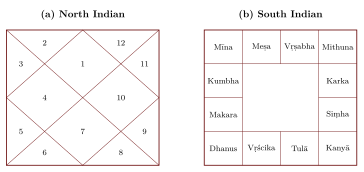

Chapter 15: Horā and Saṃhitā: Astrology and Omens in Historical Perspective¶
15.1 Scope and Approach¶
This chapter describes the two branches of jyotiḥśāstra other than mathematical astronomy: horoscopic astrology (horā) and the interpretation of omens (saṃhitā). Both have long histories, large literatures and great social importance in India, and both were practised by the same people who computed the planets. They are described here as historical and social phenomena: what the texts teach, where their ideas came from, how they were used, and how they have been judged. Describing a technique is not endorsing it. The predictive claims of astrology and omen literature have no known physical basis, and where they have been tested under controlled conditions they have not been confirmed (Section 15.7).
15.2 Origins¶
15.2.1 Omens and auspicious times¶
The oldest Indian astral beliefs concern omens and auspicious times. The Vedic ritual texts prescribe particular nakṣatras for particular rites, and the domestic ritual manuals do the same for marriage, the first feeding of a child, and other life-cycle rites. Collections of omens, celestial and terrestrial, appear in the supplements (pariśiṣṭas) of the Atharvaveda and in the Gārgīya Jyotiṣa. Pingree argued that a part of this omen material derives from the Mesopotamian celestial omen series Enūma Anu Enlil, transmitted through the Achaemenid empire, alongside native Indian traditions (Pingree 1997).
15.2.2 Greek horoscopy¶
Horoscopic astrology, which interprets the configuration of the planets in the twelve signs and twelve “places” at a moment (above all the moment of birth), is Hellenistic in origin. It was developed in Ptolemaic and Roman Egypt and reached India in the early centuries CE, notably through the Yavanajātaka (Chapter 5). Its technical vocabulary in Sanskrit is full of Greek words (horā, kendra, drekkāṇa, jāmitra, paṇaphara, āpoklima). Indian astrologers then developed it in their own directions, adding the nakṣatras, new systems of planetary periods, and many other techniques. From the thirteenth century a second wave of foreign astrology, the Perso-Arabic, entered Sanskrit as tājika (Pingree 1981, 1997).
15.3 Saṃhitā: The Bṛhatsaṃhitā¶
The classic text of the omen branch is Varāhamihira’s Bṛhatsaṃhitā (sixth century), in more than a hundred chapters (Varāhamihira 1981–1982). It is a compendium of almost everything that a royal astrologer might be asked about, and its range is remarkable:
-
the courses of the Sun, Moon and planets, the seven sages (Ursa Major), Canopus and comets, and what their appearances portend for kingdoms and crops;
-
eclipses (with the geometrical explanation discussed in Chapter 8);
-
weather: the “pregnancy” of the clouds, by which signs observed in certain months are said to bring rain a fixed number of days later; the measurement of rainfall in a vessel; winds, halos, rainbows and other atmospheric signs;
-
earthquakes, classified according to the deity (Wind, Fire, Indra or Varuṇa) presiding over the asterism in which they occur, with their portents;
-
the finding of underground water (dakārgala) from plants, termite mounds, soils and stones;
-
building sites and house plans (vāstuvidyā), the making of images, the planting of trees;
-
gems, perfumes (with the combinatorial calculation noted in Chapter 9), and the characteristics of men, women, horses, elephants, cows and dogs;
-
omens from birds and animals (śakuna), and much else.
The Bṛhatsaṃhitā is a precious source for the material culture, technology and beliefs of sixth-century India. It also contains genuine observation, especially of weather and of the natural signs of groundwater, together with much that is lore or divination. Its chapters on earthquakes, for example, contain no theory of their cause and classify them by the asterism of their occurrence. Modern claims that the text anticipated meteorology, seismology or hydrology, or that its methods have been “validated”, go beyond the evidence: a few of its rules for finding water may reflect real associations between vegetation and groundwater, but this has not been systematically established, and its rain forecasts have not been shown to work.
15.4 Comets, Meteors and Other Transient Lights¶
The siddhāntas computed only what returns: the Sun, Moon, planets, nodes and fixed stars. Everything that appears unannounced in the sky (comets, meteors and fireballs, halos, rainbows, mock suns, the red glow of the horizon) belonged to the omen branch. The Bṛhatsaṃhitā groups most of these phenomena in a run of short chapters: in the numbering of the standard editions, chapter 11 on comets, then chapters 30 to 38 on the twilights (sandhyā), the “burning of the quarters” (digdāha, an unexplained glow at the horizon), earthquakes, meteors (ulkā), halos (pariveṣa), the rainbow (indrāyudha, “Indra’s weapon”), the “cities of the Gandharvas” (gandharvanagara, cloud-forms and mirages), mock suns (pratisūrya) and thunder from a clear sky (nirghāta), with a general chapter on portents (utpāta) later in the work (Varāhamihira 1981–1982).
15.4.1 The theory of portents¶
The chapter on portents, which Varāhamihira says he takes from Garga, gives the theory behind all of these. A portent is defined as a change in the natural order (prakṛter anyatvam). Calamity comes from the accumulated wrongdoing of human beings; the gods, offended by human misconduct, produce the portents, which announce it; and the king should therefore have rites of appeasement (śānti) performed in the kingdom to avert it. Portents are of three kinds. The celestial are anomalies of the planets and stars; the atmospheric are meteors, thunder from a clear sky, unusual winds, halos, “cities of the Gandharvas”, rainbows and the like; the terrestrial are those arising from moving and fixed things on earth. Some authorities held that terrestrial portents are quelled by śānti, atmospheric ones only softened, and celestial ones not at all; Varāhamihira answers that even the celestial are quelled by large gifts of gold, food, cows and land, by a sacrifice of ten million oblations, or by milking cows on the ground at a temple of Rudra. The effects fall, in eight ways, on the king himself, his son, treasury, vehicles, city, wives and priest, and on the people.
This framework explains the place of the transient phenomena in jyotiṣa. They were not curiosities to be catalogued but messages addressed to the king, and the practical response to them was ritual, not further observation. It also explains a classification that seems strange today: a meteor, which falls through the air, is an atmospheric portent, whereas an unusual colour or course of a planet is a celestial one; comets, as the chapter on them says, could be of any of the three kinds.
15.4.2 Comets¶
The Sanskrit word for a comet, ketu, means a sign or banner; a comet is also called śikhin, “the crested one”, and dhūmaketu, “smoke-bannered”, a word that in the Ṛgveda is an epithet of fire. In the siddhāntas, as Chapter 8 explains, Ketu also became the name of the Moon’s descending node, the ninth of the astrological “planets”. The two senses are different things, the one a portent that cannot be computed, the other a mathematical point, and confusing them has produced modern claims that Indian texts “predicted” comets.
Varāhamihira’s chapter on the “course of comets” (ketucāra) opens by naming its sources, the comet lore of Garga, Parāśara and Asita Devala “and many others”. It then states a principle: the appearance and disappearance of comets cannot be determined by calculation, because comets are of three kinds, celestial, atmospheric and terrestrial. Celestial comets are those seen among the nakṣatras; atmospheric ones appear on banners, weapons, houses, trees, horses and elephants; terrestrial ones are the rest. Fireflies, gems and similar shining things are explicitly excluded, but the category is evidently wide enough to include luminous phenomena that would now be classed quite differently. Some authorities, Varāhamihira reports, count 101 comets, others a thousand, while the sage Nārada held that there is only one comet, appearing in many forms; his own view is that, whether one or many, their effects must be stated.
The rest of the chapter, sixty-odd verses in the standard text, is a classification by appearance, with the omen attached to each class. A comet that is short, thin, clear, glossy, straight, white and quickly gone brings plenty and well-being; its opposite brings misfortune. The effects mature over as many months as the comet was seen for days; for a comet seen longer than three fortnights, years are counted instead of months. Then come named types: twenty-five “ray” comets, said to be sons of the Sun, glittering like necklaces, gems or gold and seen in the east or west; types called Kumuda, Maṇiketu, Jalaketu, Bhavaketu, Padmaketu and Saṃvarta, each described by the colour and shape of its crest, the direction and time of night of its appearance and the length of its visibility; and finally the peoples and kings who suffer when a comet touches or obscures particular nakṣatras. These last verses name Andhras, Madrakas, Kāśi, Yaudheyas, Śibis, Kekayas, Siṃhala, Vaṅga, Kirātas, Colas, Hūṇas and Cīnas, which makes them, like other lists in the work, a source for the historical geography of sixth-century India. The tenth-century commentator Bhaṭṭotpala quotes at length from the earlier comet lists that Varāhamihira summarised, and his commentary is one of the two main witnesses to that lost literature (Pingree 1981). The other is the Adbhutasāgara (“Ocean of marvels”), a vast compendium of portents begun by the Sena king Ballālasena of Bengal in the later twelfth century and completed under his son Lakṣmaṇasena. Under each class of portent, comets among them, it arranges quotations from Garga, Parāśara, Vṛddhagarga, Varāhamihira and many authors whose works are otherwise lost. Its royal authorship is a reminder of whom the omen literature served: the king, whose fortunes the sky was believed to announce.
15.4.3 Meteors¶
The chapter on meteors (ulkā) begins with an explanation that is religious, not physical: meteors are the forms of beings who have enjoyed the fruits of their good deeds in heaven and are now falling, an idea familiar from the Bhagavadgītā (9.21), where those who have enjoyed heaven return to the world of mortals when their merit is spent. Varāhamihira distinguishes five kinds: dhiṣṇyā, ulkā, aśani (the thunderbolt), vidyut (lightning) and tārā (“star”, the small shooting star), and assigns to each a time within which its effect matures (a fortnight for the ulkā proper, three fortnights for the dhiṣṇyā and the thunderbolt, six days for lightning) and a measure of its strength: the shooting star gives a quarter of the effect, the dhiṣṇyā half, the other three the full effect. The grouping of lightning and thunderbolts with meteors is a reminder that the categories are those of an observer of signs, not of a physicist: everything that flashes and falls from the sky is one class.
15.4.4 Halos, rainbows and mock suns¶
The chapters on the optical phenomena of the atmosphere are short, but they are the place where the omen literature comes closest to physical explanation. The halo chapter opens by defining its subject: halos are rays of the Sun and Moon which, condensed by the wind, take the form of a circle in a thin cloud; they are of many colours, and each colour is assigned to a deity. The rainbow chapter similarly defines “Indra’s bow” as the variously coloured rays of the Sun, struck by the wind in a clouded sky, which appear in the shape of a bow, and then reports that some teachers derive it instead from the breath of the serpents of Ananta’s family. The short chapter on mock suns (pratisūrya) ends by relating them, too, to water and wind. These are not theories in the sense of Greek or Islamic optics: there is no geometry of reflection or refraction, and the explanation serves only to define the class before its omens are listed. But they show that the authors of the omen literature did think about the causes of what they classified, and that for some phenomena they preferred a natural cause, sunlight, wind and moisture, to a mythical one, which they recorded as the opinion of others. The pattern is the same as in Varāhamihira’s treatment of eclipses, where the shadow theory is affirmed and the role of Rāhu reduced to a matter of ritual (Chapter 8). The chapters on the “cities of the Gandharvas” and the “burning of the quarters”, by contrast, give only the omens, by colour and direction, with no word about the cause.
The omens themselves follow a few simple rules of correspondence. The eight colours of halos (red, blue, pale, dove-grey, cloud-coloured, variegated, green and white) are made, in that order, by Indra, Yama, Varuṇa, Nirṛti, the Wind, Īśa, Brahmā and the Waters; a rainbow that faces a king on the march foretells his defeat; a mock sun of the colour of the season, glossy and clear like beryl, brings safety and plenty, a yellow one disease; a yellow glow at the horizon threatens the king, a fiery one the country, a red one with an adverse wind the crops. In the chapter on the cities of the Gandharvas the colours white, red, yellow and black are assigned to the destruction of the four varṇas in order, and the directions to the king’s priest, the king, the commander and the crown prince. The sky was read, in other words, through the same grid of colours, directions and social ranks that organised the rest of the omen literature, and the observations were valued for what they could be made to signify.
15.4.5 The problem of identification¶
None of this literature records an event. It describes types of comet and meteor, not the comet of a particular year, and it gives no dates, positions or durations that could be checked. In this it differs sharply from Chinese astronomy, whose official records of “guest stars” and “broom stars” over two thousand years have been used to compute the orbits of comets and to identify the remnants of supernovae (Chapter 16). No Indian record has yet been securely identified of the supernovae of 1006 and 1054, which were recorded in East Asian and, for 1006, in Arabic sources; nor of any return of Halley’s comet before the modern period. The silence is not evidence that nobody looked; it reflects the genre. Omen texts were manuals for interpreting what might be seen, and court records that might have noted particular events have largely not survived.
For the same reason, attempts to identify a particular comet in an Indian text should be treated with caution. The portents that the Mahābhārata lists before the great battle, including a “white planet” and a comet afflicting Puṣya, have been used to date the war; but they are literary lists drawn from the repertoire of the omen literature, they contradict one another, and they contain no information that would single out one comet among the many that appear in any century (see Volume 7, Itihāsa–Purāṇa). An identification requires at least a date, a position and a description, and these the Sanskrit sources do not give.
The first Indian observations of comets that can be dated come from the Mughal court and from European observers in India. The emperor Jahāngīr recorded in his memoirs two comets seen during a royal journey in his thirteenth regnal year; they have been identified with the two great comets of November 1618, which the Jesuit Venceslaus Kirwitzer was observing at the same time at Goa, with what appears to be the first astronomical use of a telescope in India (Kapoor 2016; Thackston 1999). Jahāngīr also describes the fall of a meteorite near Jalandhar in April 1621, after which he had the iron forged into two swords, a dagger and a knife; the knife survives. Later comets were observed by Jesuits at Pondicherry (1689, Chapter 16) and Surat (1695), and by the astronomers of the Madras Observatory. The most curious of the Madras observations links comets and meteors directly. After the great meteor shower of 27 November 1872, which seemed to come from the region of the lost comet of Biela, the German astronomer Klinkerfues telegraphed to N. R. Pogson at Madras to search for the comet in the southern sky. Pogson found a tailless comet there in the early morning of 3 December. Whether it was Biela’s comet is still debated, and the object is now catalogued under Pogson’s name.
The contrast is instructive. The omen literature was a systematic classification of what could be seen, by colour, shape, direction and duration, and in that sense it encouraged attentive watching of the sky. But it attached each class to a prediction about kings and harvests rather than to a cause, and its own principle, that comets cannot be computed, set the transient phenomena outside the domain in which Indian astronomy made its advances. Comets became objects of computation only when their orbits could be calculated, in Europe at the end of the seventeenth century.
15.5 Horā: Horoscopic Astrology¶
15.5.1 The texts¶
After the Yavanajātaka (third century) and Mīnarāja’s Vṛddhayavanajātaka, the classical works are Varāhamihira’s Bṛhajjātaka and Laghujātaka (sixth century), Kalyāṇavarman’s Sārāvalī (probably ninth century), Śrīpati’s astrological works (eleventh century), Vaidyanātha’s Jātakapārijāta and Mantreśvara’s Phaladīpikā (both late medieval, their dates uncertain). The Bṛhatpārāśarahorāśāstra, ascribed to the ancient sage Parāśara and now very popular, is a compilation whose date is uncertain and probably late; it is not an ancient text in its present form (Pingree 1981). Kerala produced its own tradition of horary astrology, of which the Praśnamārga (seventeenth century) is the best-known text.
15.5.2 The shape of a classical manual¶
Varāhamihira’s Bṛhajjātaka shows how a classical manual of nativities is organised. It begins with definitions: the signs and their divisions (horā, drekkāṇa, navāṃśa and others), with their Greek names; the planets, their natures, friendships and strengths; and the places of the horoscope. It then deals with the conception and birth of the child, with rules for deciding whether a child will live and how long, and with the effects of each planet in each sign and place, alone and in combination with others. Further chapters concern the native’s character, appearance, wealth and profession, the horoscopes of women, death, and the techniques for determining the periods in which each planet gives its effects. The same order of subjects, with variations and additions, is found in later manuals. The horoscopes of women were treated in a separate chapter, largely concerned with marriage, chastity and widowhood, which reflects and reinforced the norms of the society for which the texts were written.
15.5.3 Techniques¶
A horoscope (jātaka, janmapatrī, kuṇḍalī) records the positions of the planets in the signs, the ascendant (lagna: the sign rising on the eastern horizon), the twelve “houses” (bhāvas) counted from it, and the nakṣatra of the Moon. The astrologer judges the “strength” of each planet, the houses it occupies and rules, the aspects between planets, and the presence of particular combinations (yogas). The computation of the ascendant requires real spherical astronomy, and the demand for horoscopes was one of the reasons why accurate planetary positions mattered.
Casting a horoscope in the traditional way involved the following steps, each drawing on the mathematical astronomy of the siddhāntas: (1) convert the time of birth, usually recorded in ghaṭikās after sunrise, into a moment of the astronomer’s reckoning; (2) compute the ahargaṇa and the true sidereal longitudes of the Sun, Moon and planets, and the position of the lunar node; (3) compute the ascendant from the rising times of the signs at the latitude of the birthplace (Chapter 6); (4) divide the ecliptic into houses counted from the ascendant, by one of several conventions; (5) find the nakṣatra and quarter of the Moon, from which the planetary periods are started; and (6) compute the various divisional charts (such as the navāṃśa, in which each sign is divided into nine parts). Only after this computation did the work of interpretation begin. In north India the result was drawn as a diamond-shaped chart, in south India as a square of twelve cells (Figure 15.1), and in Bengal and Odisha in other forms.

Characteristic Indian developments include the systems of planetary periods (daśās), which divide a life into periods ruled by successive planets. In the most widely used, the viṃśottarī (“120-year”) system, the sequence starts from the lord of the Moon’s birth nakṣatra (Table 15.1).
| Planet | Years | Nakṣatras ruled |
|---|---|---|
| Ketu | 7 | Aśvinī, Maghā, Mūla |
| Venus | 20 | Bharaṇī, Pūrvaphalgunī, Pūrvāṣāḍhā |
| Sun | 6 | Kṛttikā, Uttaraphalgunī, Uttarāṣāḍhā |
| Moon | 10 | Rohiṇī, Hasta, Śravaṇa |
| Mars | 7 | Mṛgaśiras, Citrā, Dhaniṣṭhā |
| Rāhu | 18 | Ārdrā, Svāti, Śatabhiṣaj |
| Jupiter | 16 | Punarvasu, Viśākhā, Pūrvabhādrapadā |
| Saturn | 19 | Puṣya, Anurādhā, Uttarabhādrapadā |
| Mercury | 17 | Āśleṣā, Jyeṣṭhā, Revatī |
| Total | 120 |
15.5.4 Other branches¶
Besides nativities, the astrologer was consulted on the right moment to set out on a military campaign (yātrā), on marriage (vivāha), on questions put to him (praśna, answered from the horoscope of the moment of asking), and above all on the choice of auspicious moments (muhūrta) for every important act: founding a building, a wedding, a coronation, a journey, a child’s first feeding or tonsure. Rāma Daivajña’s Muhūrtacintāmaṇi (1600) is the standard text. In it the nakṣatras are grouped by character: “fixed” (dhruva: Rohiṇī and the three Uttaras), “movable” (cara: Svāti, Punarvasu, Śravaṇa, Dhaniṣṭhā, Śatabhiṣaj), “fierce” (ugra: Bharaṇī, Maghā and the three Pūrvas), “soft” (mṛdu: Mṛgaśiras, Citrā, Anurādhā, Revatī), “sharp” (tīkṣṇa: Ārdrā, Āśleṣā, Jyeṣṭhā, Mūla), “mixed” (miśra: Kṛttikā, Viśākhā) and “swift” (kṣipra: Hasta, Aśvinī, Puṣya), each suited to certain kinds of act.
15.5.5 Tājika¶
The Perso-Arabic astrology that entered Sanskrit from the thirteenth century under the name tājika (from a Persian word for “Arab” or “Persian”) brought its own techniques: the annual horoscope cast for the moment when the Sun returns to its position at birth (varṣaphala), the “lots” (sahamas, from Arabic sahm) computed from the distances between planets, a progressed point moving one sign a year (munthā), and a system of aspects and planetary relations with Arabic-derived names. Its vocabulary is full of Arabic and Persian words in Sanskrit dress, and the Tājikanīlakaṇṭhī (1587) of Nīlakaṇṭha Daivajña became its classic text. Tājika became, and remains, an important part of Indian astrological practice, a clear example of Indo-Islamic exchange in the astral sciences (Pingree 1981, 1997).
15.5.6 Remedies¶
Astrology also offers remedies for the supposed ill effects of the planets: rites of propitiation (grahaśānti), recitations, fasts and gifts on the weekday of a planet, and the wearing of gems associated with the planets. The usual scheme assigns the ruby to the Sun, the pearl to the Moon, coral to Mars, the emerald to Mercury, yellow sapphire to Jupiter, diamond to Venus, blue sapphire to Saturn, hessonite to Rāhu and cat’s-eye to Ketu, the nine together forming the navaratna. These associations are traditional; there is no evidence that gems, rites or recitations alter a person’s health or fortune, and they should never be relied on in place of medical treatment or practical action. The trade in astrological gems and remedies is today a considerable commercial enterprise.
15.6 Astrology in Indian Society¶
15.6.1 Courts, temples and households¶
Astrologers were fixtures of royal courts, consulted on campaigns, coronations and the meaning of portents; inscriptions record grants to them. Temples needed them to fix festivals and consecrations. Households needed them for the life-cycle rites, and from the second millennium onward the horoscope written at a child’s birth became, for many families, a lasting document, often consulted again at marriage. Dated horoscopes and almanacs are themselves valuable historical sources. The demand for these services sustained the profession, and through it the computational astronomy on which it depended (Yano 2003).
15.6.2 Marriage, caste and gender¶
The matching of horoscopes before marriage illustrates both the social reach of astrology and its costs. The common system of “eight factors” (aṣṭakūṭa) scores the compatibility of bride and groom out of 36 points, from the nakṣatras and signs of their Moons: varṇa (1 point), vaśya (2), tārā (3), yoni (4), grahamaitrī (5), gaṇa (6), bhakūṭa (7) and nāḍī (8). A score of eighteen or more is commonly treated as acceptable. The first factor assigns a varṇa to each sign and treats a bride of “higher” varṇa than the groom as a defect, carrying the hierarchy of caste into the stars. The belief in a “Mars defect” (maṅgala doṣa), attributed to a person with Mars in certain houses, has been a source of real hardship, especially for women, who have been considered difficult to marry or blamed for misfortune because of it. Horoscope matching has also served to give a respectable reason for refusing a match on grounds of caste, money or personal preference. A history of Indian astrology must record these effects along with its intellectual achievements.
15.6.3 The astrologer’s training¶
A traditional astrologer learned his craft much as an astronomer did: by memorising the root texts, above all Varāhamihira’s Bṛhajjātaka or a later manual, studying them with a teacher and a commentary, and practising the computations needed to cast a horoscope. Skill in computation was the foundation, and the most respected astrologers were also competent astronomers; the less learned relied on almanacs and ready-made tables for the planetary positions. The profession was largely hereditary and, like astronomy, mostly Brahmin and male, though astrologers of other communities, including Muslim astrologers trained in the Perso-Arabic tradition, also practised.
15.6.4 Criticism within the tradition¶
Scepticism about astrology is old in India. The Buddhist Brahmajāla Sutta lists predicting eclipses and the fortunes of kings from the stars among the “low arts” by which some ascetics earned their living and from which the Buddha’s monks abstain. The Arthaśāstra has a famous verse on the matter:
Arthaśāstra 9.4.26
nakṣatram ati pṛcchantaṃ bālam artho ’tivartate
artho hy arthasya nakṣatraṃ kiṃ kariṣyanti tārakāḥ
“The object slips away from the fool who keeps consulting the stars. The object itself is the star of the object: what will the stars do?”
15.6.5 Astrology today¶
Astrology remains widespread in contemporary India. Horoscopes are cast at birth in many families, and matrimonial advertisements frequently mention the nakṣatra, the Moon sign or the absence of “Mars defect”. Newspapers, magazines, television channels and websites carry astrological forecasts; computer programs cast and match horoscopes in seconds; and astrologers are consulted on business, politics and health as well as marriage. At the same time astrology has always had critics in India, from the authors quoted above to modern scientists, rationalist organisations and social reformers who have pointed out its lack of evidence and its role in reinforcing caste and gender prejudice. The coexistence of these attitudes is part of the history this chapter describes. For the historian, the persistence of astrology is itself significant: it shows how a body of technical knowledge, transmitted for two thousand years and adapted to new media, can retain social authority independently of evidence for its claims. Its study belongs to the history of religion and society as much as to the history of science, and it requires the same care in describing what people believed and did, without either ridicule or endorsement.
15.7 The Scientific Status of Astrology¶
Astrology’s claims have been tested many times in the modern period. In a double-blind experiment published in Nature, astrologers were unable to match horoscopes with the personality profiles of the people concerned better than chance (Carlson 1985). In an Indian test organised by the astrophysicist Jayant Narlikar and colleagues, astrologers were asked to tell, from horoscopes, which children had been classed as academically bright and which as mentally challenged; their results were no better than chance (Narlikar et al. 2009). No physical mechanism is known by which the positions of distant planets at the moment of birth could shape a person’s character or fortune. There are also internal difficulties: Indian and Western astrologers use zodiacs that now differ by about twenty-four degrees (Chapter 4), so that most people have different Sun signs in the two systems, and both claim success.
In 2001 the University Grants Commission proposed university courses in “Vedic astrology” (jyotir vijñāna), a proposal opposed by many Indian scientists; a challenge to it in the courts was dismissed by the Supreme Court in 2004. The debate showed how much astrology still matters in India and how contested its status is. The position taken in this volume is that astrology is an important part of the history of Indian thought and society, which should be studied seriously and described accurately, but that it is not a science, and that its historical connection with mathematical astronomy does not lend it the validity of astronomy.
Further Reading¶
Pingree (1981) surveys the astrological and omen literature; Pingree (1997) traces its sources; Pingree (1978) edits the Yavanajātaka; Varāhamihira (1981–1982) translates the Bṛhatsaṃhitā; Yano (2003) describes the place of astrology in Hindu life; Carlson (1985) and Narlikar et al. (2009) report controlled tests. For comets and meteors, Varāhamihira (1981–1982, chs 11 and 33) gives Varāhamihira’s chapters in translation, Kapoor (2016) the first datable Indian comet records, and Thackston (1999) Jahāngīr’s own account of the comets of 1618 and the meteorite of 1621.